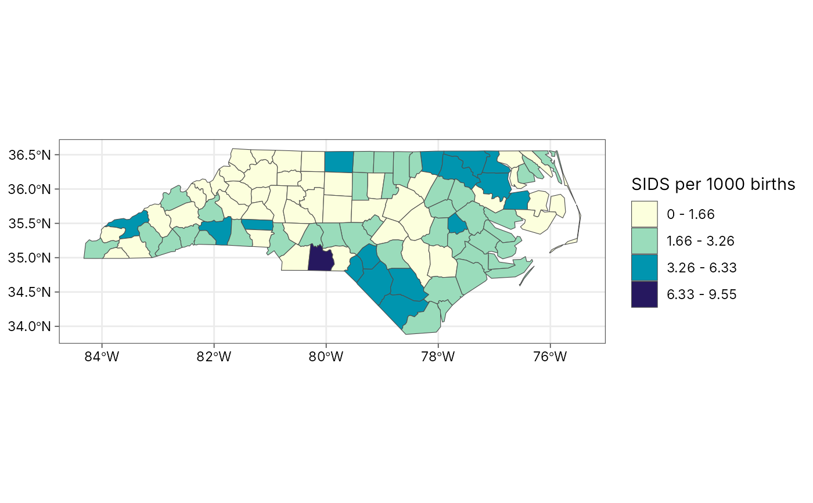
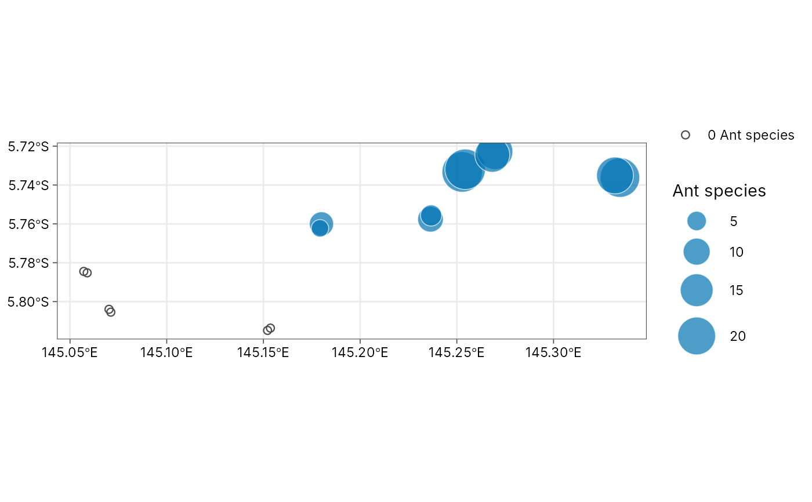

Choropleth and bubble maps
thematic-maps.RdTwo classic thematic maps, drawn with ggplot2 and theme_tidymapr():
plot_choropleth()shades polygons (regions, plots, provinces) by a numeric column. Values are grouped into classes withgeo_classify()(quantile, equal, Fisher-Jenks, pretty, standard deviation or fixed breaks), so the legend shows readable ranges such as"10 - 20". The classification (breaks, counts per class and goodness of variance fit) is kept in attribute"classification"of the plot.plot_bubble()draws a circle at each site with its area proportional to a numeric column, the standard way to map counts such as species richness or abundance. Larger circles are drawn first, so small ones stay visible on top. Sites with a value of zero (sampled, but nothing found) are shown as small open circles, so absences stay on the map instead of disappearing.
Both return an ordinary ggplot, so you can add layers, change scales or
save with geo_save().
Usage
plot_choropleth(
data,
value,
n = 5,
style = c("quantile", "equal", "jenks", "pretty", "sd", "fixed"),
breaks = NULL,
digits = 3,
palette = "YlGnBu",
reverse = TRUE,
border = "grey30",
linewidth = 0.2,
na_fill = "grey85",
legend_title = NULL
)
plot_bubble(
data,
size,
lon = lon,
lat = lat,
colour = NULL,
fill = "#0072B2",
max_size = 12,
alpha = 0.7,
background = NULL,
legend_title = NULL
)Arguments
- data
For
plot_choropleth(), ansftable of polygons. Forplot_bubble(), ansfpoint table or a data frame with longitude and latitude columns.- value
<
data-masking> Numeric column that sets the fill class (plot_choropleth()).- n, style, breaks, digits
Classification, passed to
geo_classify().- palette
For
plot_choropleth(), the name of a sequential palette fromgrDevices::hcl.colors()(default"YlGnBu", colour-blind safe and readable in greyscale).- reverse
Reverse the palette? The default (
TRUE) runs from light (low values) to dark (high values).- border, linewidth
Polygon outline colour and width.
- na_fill
Fill for polygons with a missing value.
- legend_title
Legend title; defaults to the column name.
- size
<
data-masking> Numeric column that sets bubble area (plot_bubble()).- lon, lat
<
data-masking> Coordinate columns whendatais notsf(plot_bubble()).- colour
<
data-masking> Optional column that colours the bubbles by group (Okabe-Ito palette).- fill
Bubble colour when
colouris not given.- max_size
Diameter (in points) of the largest bubble.
- alpha
Bubble transparency.
- background
Optional
sflayer (for example a coastline or province boundaries) drawn in light grey under the bubbles.
See also
geo_classify() for the classes alone; plot_sites() for
study-site maps with basemaps.
Examples
# Choropleth: sudden infant deaths 1974-78 in North Carolina counties
# (real data shipped with sf)
nc <- sf::st_read(system.file("shape/nc.shp", package = "sf"), quiet = TRUE)
nc$sids_rate <- 1000 * nc$SID74 / nc$BIR74
p <- plot_choropleth(nc, sids_rate, n = 5, style = "jenks",
legend_title = "SIDS per 1000 births")
p

attr(p, "classification")$gvf
#> [1] 0.8824022
# Bubble map: ant species observed on each Mt Wilhelm transect
# (Mottl, Moses and Klimes 2023)
# \donttest{
if (requireNamespace("tidydiversity", quietly = TRUE)) {
richness <- tidydiversity::png_ants |>
dplyr::distinct(site, transect, species) |>
dplyr::count(site, transect, name = "species")
# Transects above 2,200 m were baited but no ants came: richness 0
sites <- png_ants_sites |>
dplyr::left_join(richness, by = c("site", "transect")) |>
dplyr::mutate(species = dplyr::coalesce(species, 0L))
plot_bubble(sites, species, legend_title = "Ant species")
}

# }